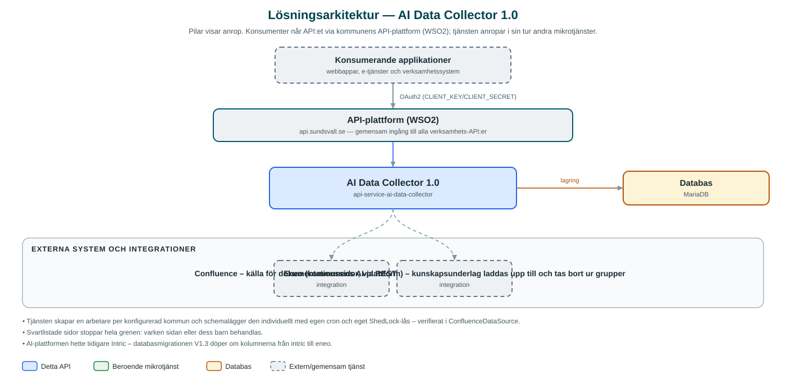

AI Data Collector
Samlar in innehåll från Confluence och håller det synkroniserat som kunskapsunderlag i AI-plattformen Eneo, så att kommunens AI-assistenter alltid svarar utifrån aktuell dokumentation.
Om API:et
AI Data Collector försörjer kommunens AI-assistenter med kunskapsunderlag. Tjänsten läser sidträd i Confluence – kommunens dokumentationsplattform – och laddar upp sidornas innehåll till grupper i AI-plattformen Eneo, där assistenterna använder dem som kunskapskällor.
Synkroniseringen sker på två sätt: dels genom schemalagda genomgångar av konfigurerade sidträd, dels i realtid via en webhook som Confluence anropar när sidor skapas, uppdateras eller tas bort. Webhook-anropen verifieras med HMAC-SHA256-signatur innan de behandlas.
Vilka Confluence-träd som mappas mot vilka Eneo-grupper konfigureras per kommun, och enskilda grenar kan svartlistas så att de aldrig skickas till AI-plattformen. Tjänsten håller reda på redan insamlade sidor i sin databas för att kunna uppdatera och ta bort rätt underlag i Eneo.
Det här gör API:et
- Schemalagd insamling – Konfigurerade Confluence-sidträd gås igenom enligt cron-schema per kommun och synkroniseras till Eneo.
- Realtidsuppdatering via webhook – Confluence anropar tjänsten när sidor skapas, uppdateras eller tas bort; ändringen speglas direkt i Eneo.
- Mappning mot Eneo-grupper – Varje Confluence-rotsida mappas mot en grupp i Eneo, konfigurerbart per kommun.
- Svartlistning – Utpekade grenar i sidträdet hoppas över i sin helhet och skickas aldrig till AI-plattformen.
- Signaturverifiering – Webhook-anrop verifieras med HMAC-SHA256 (x-hub-signature) innan de behandlas.
API-dokumentation
API:ets samtliga resurser, parametrar och datamodeller finns beskrivna i en OpenAPI-specifikation som är hämtad ur källkodsförrådet. Den kan utforskas interaktivt i Swagger UI eller laddas ner som YAML.
Teknisk dokumentation
Nedan beskrivs hur tjänsten är uppbyggd, vilka andra tjänster den anropar och vad som krävs för att driftsätta den. Informationen är härledd ur källkoden och dess konfiguration på GitHub.
Arkitektur

API:et är en mikrotjänst (Java 25, Spring Boot via kommunens gemensamma tjänsteplattform dept44 (8.0.8), byggd med Maven). Konsumenter når tjänsten via kommunens gemensamma API-plattform (WSO2) på api.sundsvall.se – tjänsten anropas aldrig direkt. Lagring: MariaDB med Flyway-migrationer; insamlade Confluence-sidor och deras Eneo-koppling lagras per kommun, samt ShedLock-tabell för schemaläggningslås. Övriga integrationer som förekommer i koden: Confluence – källa för dokumentationssidor, via REST-API och webhooks, Eneo (kommunens AI-plattform) – kunskapsunderlag laddas upp till och tas bort ur grupper.
Teknikstack
- Språk: Java 25
- Ramverk: Spring Boot via kommunens gemensamma tjänsteplattform dept44 (8.0.8), byggd med Maven
- Databas: MariaDB med Flyway-migrationer; insamlade Confluence-sidor och deras Eneo-koppling lagras per kommun, samt ShedLock-tabell för schemaläggningslås
- Övrigt: ShedLock med JDBC-låsning för schemalagda jobb, OpenAPI Generator för Eneo-klienten, HMAC-signaturverifiering av webhooks
Beroenden till andra mikrotjänster
Inga anrop till andra mikrotjänster hittades i källkodens konfiguration.
Konfiguration och driftsättning
- Miljökonfiguration per kommun: Confluence-anslutning, mappningar rotsida–Eneo-grupp, svartlistade rotsidor samt cron-schema och ShedLock-låstid
- Webhook-hemlighet för HMAC-verifiering av Confluence-anrop
- URL och OAuth2-klientuppgifter för Eneo
- MariaDB-anslutning; databasschemat versionshanteras med Flyway
Noterbart ur källkoden
- Tjänsten skapar en arbetare per konfigurerad kommun och schemalägger den individuellt med egen cron och eget ShedLock-lås – verifierat i ConfluenceDataSource.
- Svartlistade sidor stoppar hela grenen: varken sidan eller dess barn behandlas.
- AI-plattformen hette tidigare Intric – databasmigrationen V1.3 döper om kolumnerna från intric till eneo.
- README anger Java 21, men bygget styrs av dept44-service-parent 8.0.8 som övriga tjänster (Java 25) – koden är sanningskällan.
Källkod
Källkoden är öppen och finns hos Sundsvalls kommun på GitHub. I källkodsförrådet finns även instruktioner för att klona, konfigurera och starta tjänsten i egen miljö.